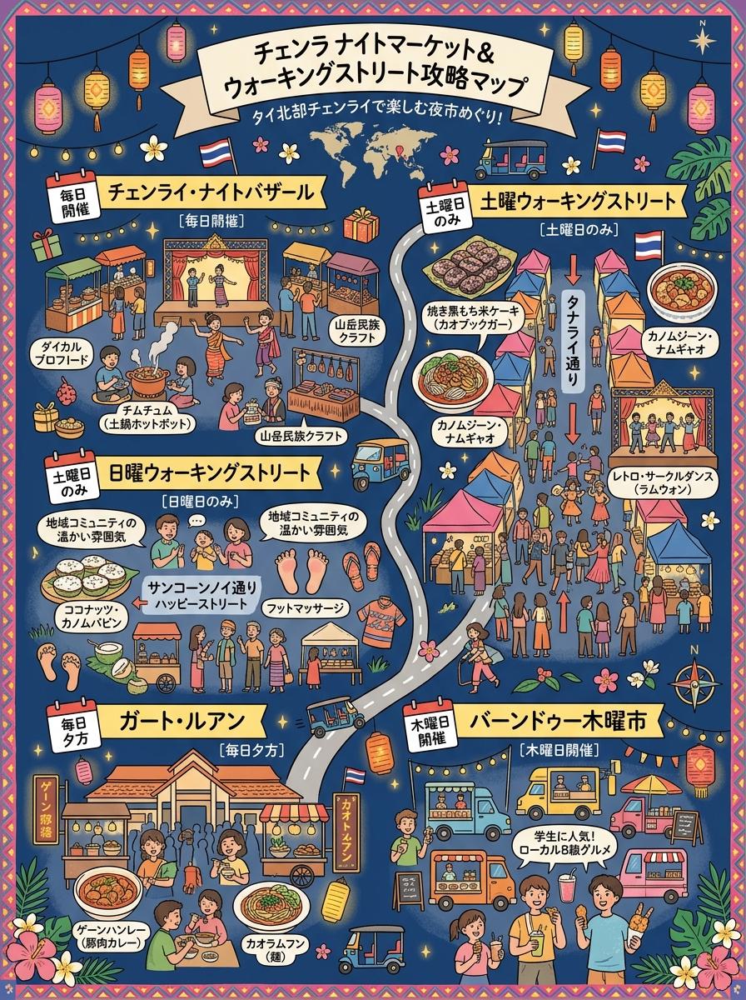
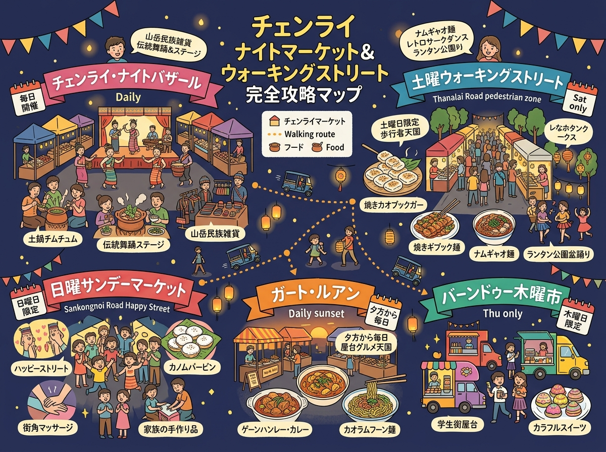

01
VISUAL GUIDE
インフォグラフィック・イラストガイド
クリックすると拡大して詳細を確認・印刷できます。

🔍 タップで拡大
A4 縦型
チェンライ・ナイトバザール＆土曜・日曜ウォーキングストリート攻略マップ（情報凝縮ポスター）
旅行者の持ち歩き・印刷に適した手書き風インフォグラフィック。

🔍 タップで拡大
A4 横型
周遊マップ ＆ 見開きガイド
位置関係やルート、全体像を俯瞰できるワイドデザイン。
DETAILED GUIDE & DATA
詳細ガイド ＆ データ一覧（全5件）
現地調査および公的データに基づく最新詳細情報。
02
土曜ウォーキングストリート（กาดเจียงฮายรำลึก）
03
日曜サンデーウォーキングストリート（กาดคนม่วน สันโค้งน้อย）
04
ガート・ルアン（第1市営市場・夕暮れ屋台街 / กาดหลวงเชียงราย）
05